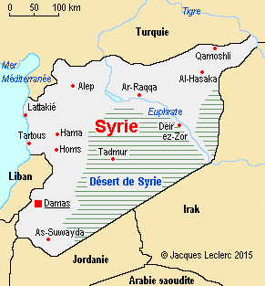

la Syrie:
République arabe syrienne (en arabe : الجمهورية العربية السورية / al-jumhūriyya al-ʿarabiyya as-sūriyya), est un pays d'Asie de l'Ouest situé sur la côte orientale de la mer Méditerranée. Elle possède des frontières terrestres avec la Turquie, l'Irak, la Jordanie, Israël, le Liban et une frontière maritime avec Chypre. Sa capitale est Damas.
En français, la Syrie était autrefois synonyme du Levant ou de la Grande Syrie (bilad el-Cham en arabe [بلاد الشام]). Durant l'Empire ottoman, cette région fut un temps regroupée, comprenant les États actuels de la Syrie, d'Israël, du Liban, de la Jordanie et de la Palestine. Durant l'Antiquité, ces pays étaient distinctement la Phénicie, les royaumes d'Israël et de Juda, la province romaine de Judée puis de Palestine, l'Assyrie et une partie de la Mésopotamie occidentale.
De février 1958 à fin septembre 1961, l'Égypte et la Syrie s'unissent brièvement dans la République arabe unie, jusqu'au coup d'État du général Haydar al-Kouzbari.
À sa mort en 2000, son fils, Bachar el-Assad, lui succède et maintient le régime instauré par son père, avec un certain relâchement des libertés en début de mandat9. Début 2011, la Guerre civile syrienne se déclenche dans le cadre du Printemps arabe10. De 2011 à septembre 2016, le conflit a fait près de 500 000 morts et deux millions de blessés11.